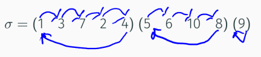
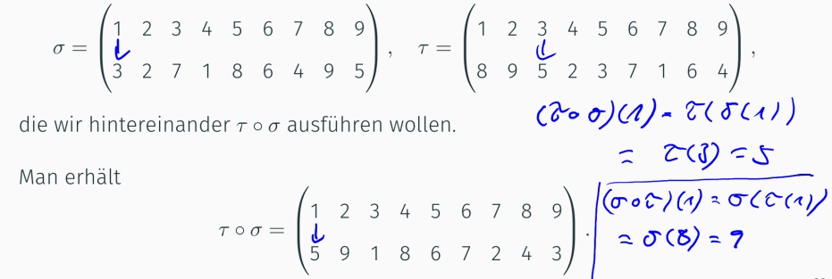
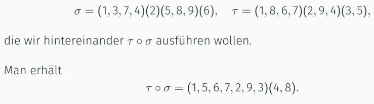

Mathe Klausur
Vorlesung 5: Kombinatorik, Infinitesimalrechnung, Folgen
Kombinatorik
Schreibweise von Permutationen
Zweizeilenform:

Zyklenschreibweise:

Bei der Zyklenschreibweise liest man erst die erste Zahl, dann die dazugehörige Permutation (die Zahl dadrunter)
Danach liest man die Zahl unter der zuletzt gelesenen Zahl.
Wenn man wieder bei der ersten Zahl angekommen ist hat man den Zyklus beendet
Verknüpfung zweier Permutationen (∘):
Wird auch Komposition genannt
σ∘ͳ ≠ ͳ∘σ die Reihenfolge ist wichtig


Infinitesimalrechnung
Folge: Unendliche Auflistung von Zahlen : (an)n∈ℕ = (a₁,a₂,...)
Pünktchenschreibweise: bsp. (an)n∈ℕ = (1,2,3,...)
Bildungsgesetz: zu dem bsp. an = n,n∈ℕ
Bei dem Bildungsgesetz passt man (an = _ n∈ℕ) so an, dass es der Pünktchenschreibweise entspricht
Begriffe
monoton fallend: an ≥ an+1
streng monoton fallend: an > an+1
monoton steigend: an ≤ an+1
streng monoton steigend: an < an+1
beschränkt: Wenn alle n∈ℕ nach oben oder unten beschränkt sind. Ist die ganze Folge beschränkt.
nach unten beschränkt: Wenn es eine Zahl S- gibt und die Folge S-≤an. (unterschreitet nie den Punkt S-)
nach oben beschränkt: Wenn es eine Zahl S+ gibt und die Folge an≤S+. (überschreitet nie den Punkt S+)
Konvergent: Eine Folge ist konvergent, wenn sich diese einen Grenzwert immer weiter nähert und nie erreicht.
Limes: anderes Wort für Grenzwert
Divergent: Eine Folge ohne Grenzwert